Программа Саджи — таблица асан
Все асаны: название, описание и фото. У поз с уровнями есть подварианты: 21-1, 21-2, 32-1, 32-2, 32-3.
| № | Название | Описание | Фото |
|---|---|---|---|
| Разминка | |||
| 1 | Суставная разминкаsūkṣma vyāyāma सूक्ष्म व्यायाम | Мягкие вращения и сгибания суставов сверху вниз: шея, плечи, локти, кисти, таз, колени, стопы. |  |
| 2 | Приветствие солнцуsūrya namaskāra सूर्य नमस्कार | Связка из 12 положений в ритме дыхания. Несколько кругов. | 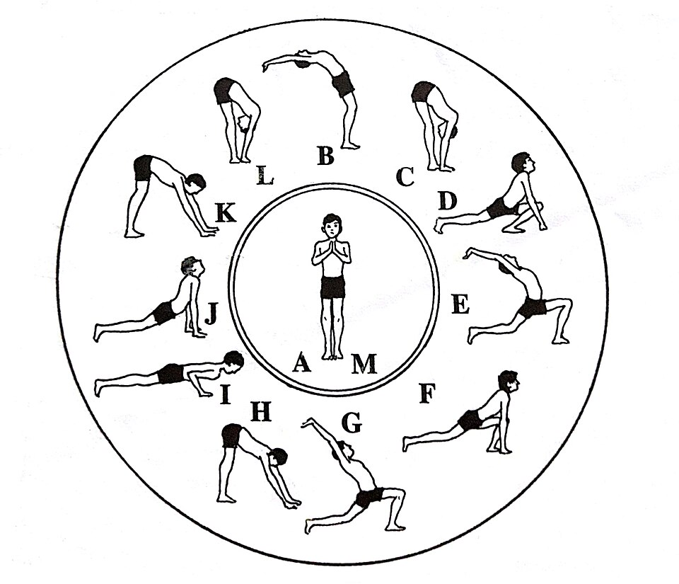 |
| 3 | Кошка — короваmārjārīāsana — bitilāsana मार्जरीआसन — बितिलासन | На четвереньках. На вдохе прогиб, взгляд вперёд (корова). На выдохе спина округляется, подбородок к груди (кошка). | 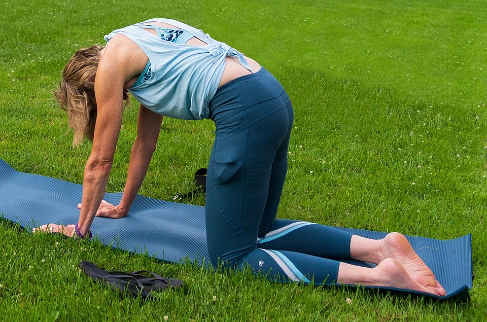  |
| 4 | Поза тиграvyāghrāsana व्याघ्रासन | Из кошки: колено ко лбу, затем нога назад. Поочерёдно на обе ноги. | 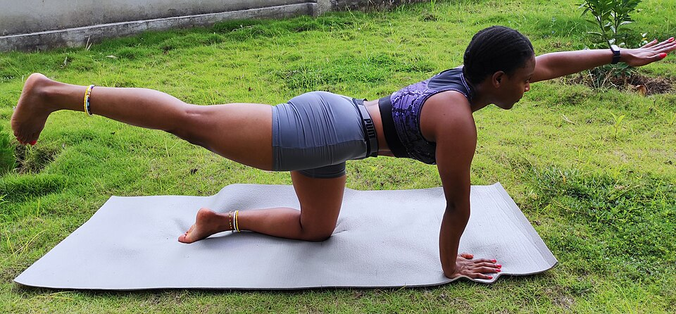 |
| Лёжа на спине | |||
| 5 | Поочерёдный подъём ногeka pāda uttānapādāsana एकपाद उत्तानपादासन | Лёжа на спине. На вдохе поднимаем одну прямую ногу, на выдохе опускаем. Ноги чередуем. | 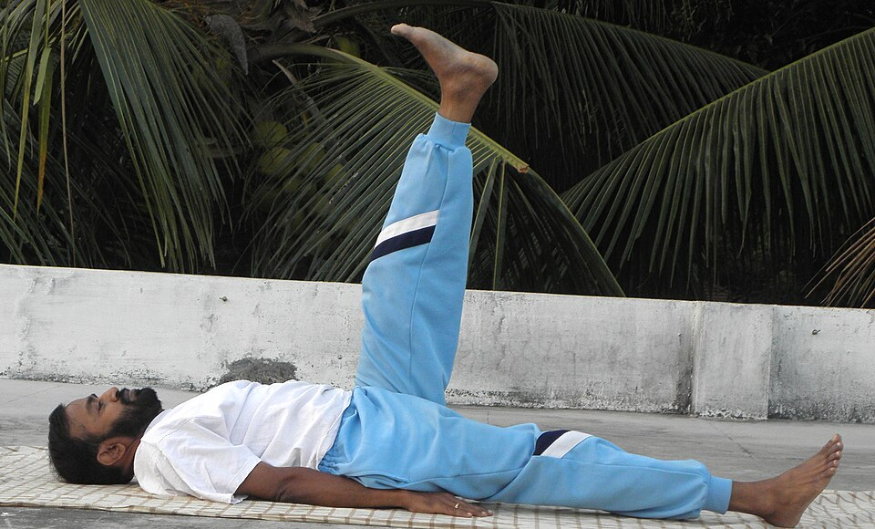 |
| 6 | Подъём двух ногuttānapādāsana उत्तानपादासन | Лёжа на спине, поднимаем обе прямые ноги вместе. Поясница прижата к полу. | 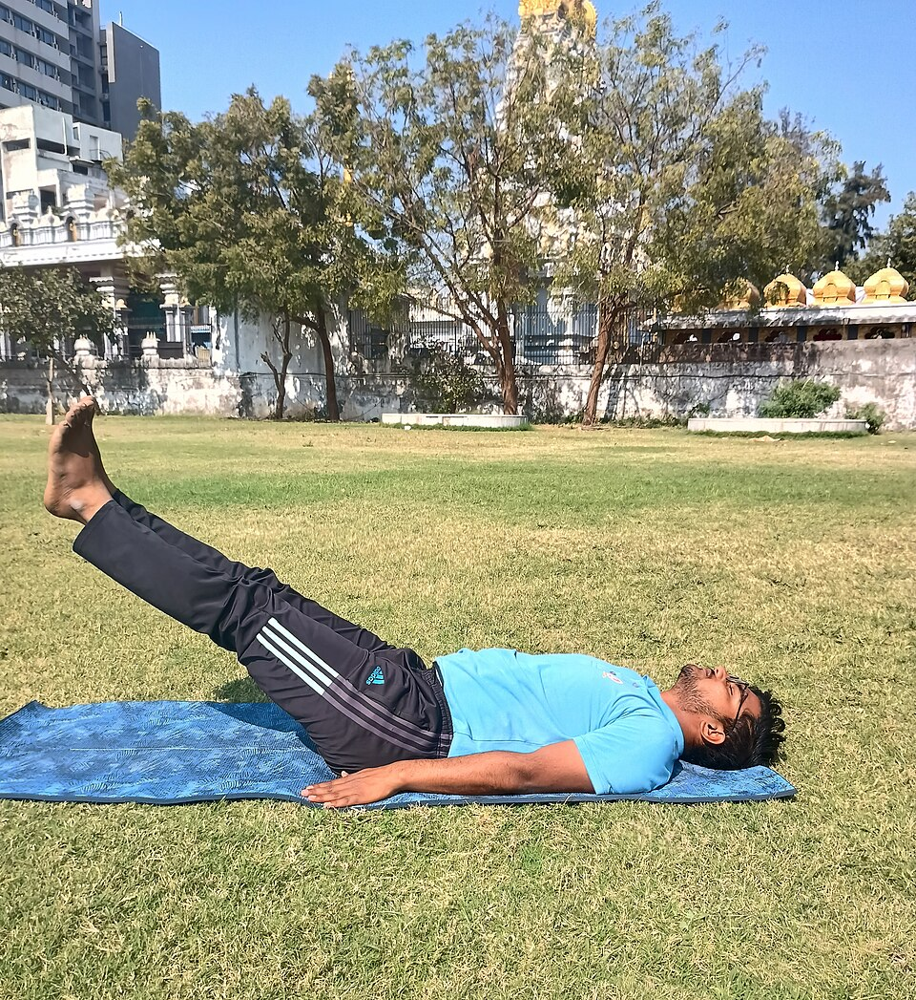 |
| 7 | Колено к грудиpavanamuktāsana पवनमुक्तासन | Колено обхватываем руками и притягиваем к груди, голова тянется к колену. Вторая нога поднимается вертикально вверх или делает вращения: 5–10 оборотов по часовой стрелке, затем 5–10 против. |  |
| 8 | Счастливый ребёнокānanda bālāsana आनन्द बालासन | Лёжа на спине, колени разведены к подмышкам, руки держат стопы. Поясница на полу. |  |
| 9 | Нога вверх с захватомsupta pādāṅguṣṭhāsana सुप्त पादाङ्गुष्ठासन | Одна нога вертикально вверх, руки держат щиколотку. Вторая нога прямая на полу. | нет картинки |
| 10 | Полумостsetu bandhāsana सेतु बन्धासन | Стопы у таза, на вдохе поднимаем таз. Опора на плечи и стопы. |  |
| 11 | Скручивание лёжаjaṭhara parivartanāsana जठर परिवर्तनासन | Руки в стороны. Согнутые ноги опускаем вбок, голову поворачиваем в противоположную сторону. |  |
| 12 | Низкая лодкаardha nāvāsana अर्ध नावासन | Поясница на полу, лопатки и прямые ноги приподняты невысоко над полом. |  |
| 13 | Лодка с захватом пальцевubhaya pādāṅguṣṭhāsana उभय पादाङ्गुष्ठासन | Баланс на седалищных костях: прямые ноги вверх, руки держат большие пальцы ног. |  |
| Лёжа на животе | |||
| 14 | Поза крокодилаmakarāsana मकरासन | Лёжа на животе, голова на сложенных руках, ноги расслаблены. Отдых. |  |
| 15 | Сфинксsālamba bhujaṅgāsana सालम्ब भुजंगासन | Лёжа на животе, опора на предплечья, локти под плечами, грудь тянется вперёд. |  |
| 16 | Кобраbhujaṅgāsana भुजंगासन | Ладони под плечами, грудь поднимается, таз остаётся на полу. Кто может, переходит из сфинкса в кобру. Кто не может, повторяет сфинкс. |  |
| 17 | Лукdhanurāsana धनुरासन | Лёжа на животе, руки держат щиколотки. Поднимаем грудь и бёдра. | 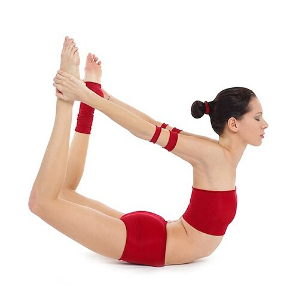 |
| Переход | |||
| 18 | Поза ребёнкаbālāsana बालासन | Таз на пятках, лоб на полу, руки вдоль тела или вытянуты вперёд. |  |
| 19 | Собака мордой внизadho mukha śvānāsana अधोमुखश्वानासन | Опора на ладони и стопы, таз вверх, спина прямая. |  |
| 20 | Голубьeka pāda rājakapotāsana एकपाद राजकपोतासन | Из собаки. Одна нога согнута перед собой, другая вытянута назад. Сидишь ровно или опускаешь корпус вперёд: голова на колено или на пол перед собой. |  |
| Лёжа на боку | |||
| 21 | Поза Вишнуanantāsana अनन्तासन | Лёжа на боку. Два уровня. | |
| 21-1 | Уровень 1 (простой) | Рука согнута в локте, голова на ладони, верхняя нога поднимается. | 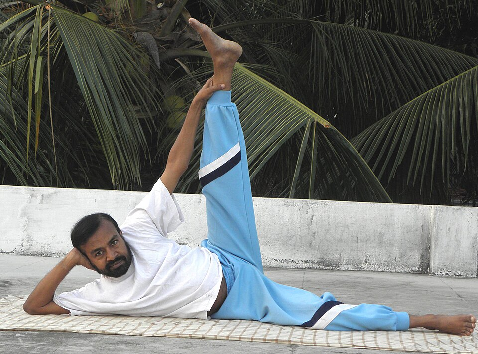 |
| 21-2 | Уровень 2 (сложнее) | Захват верхней ноги, нижняя рука вытянута на полу, голова лежит на ней. |  |
| Сидя | |||
| 22 | Наклон к одной ногеjānu śīrṣāsana जानु शीर्षासन | Одна нога прямая, стопа другой у бедра. Наклон к прямой ноге. | 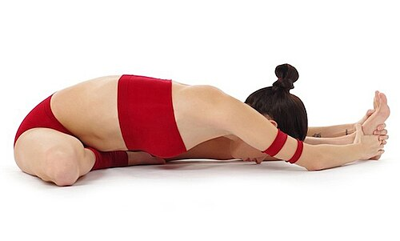 |
| 23 | Наклон к двум ногамpaścimottānāsana पश्चिमोत्तानासन | Обе ноги прямые, наклон от таза, руки к стопам. |  |
| 24 | Скручивание сидяardha matsyendrāsana अर्धमत्स्येन्द्रासन | Одна нога согнута, стопа стоит за коленом другой. Корпус разворачиваем к согнутому колену. |  |
| 25 | Коровья мордаgomukhāsana गोमुखासन | Колено над коленом, руки сцеплены в замок за спиной. |  |
| 26 | Ноги в стороныupaviṣṭa koṇāsana उपविष्टकोणासन | Ноги широко в стороны, руки держат большие пальцы. Наклон вперёд с прямой спиной. |  |
| 27 | Бабочкаbaddha koṇāsana बद्धकोणासन | Стопы соединены, колени в стороны, спина прямая. |  |
| Перевёрнутые | |||
| 28 | Плугhalāsana हलासन | Из положения лёжа ноги заводим за голову, стопы на пол. | 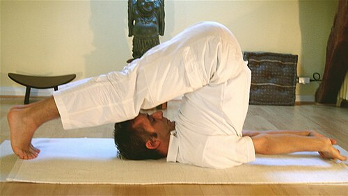 |
| 29 | Берёзкаsarvāṅgāsana सर्वाङ्गासन | Тело вертикально, опора на плечи, руки поддерживают спину. |  |
| 30 | Полуберёзкаviparīta karaṇī विपरीत करणी | Руки держат таз, как чашу. Ноги вверх под углом, вес на локтях. |  |
| 31 | Поза рыбыmatsyāsana मत्स्यासन | Опора на предплечья, грудь вверх, макушка касается пола. Компенсация после перевёрнутых. | 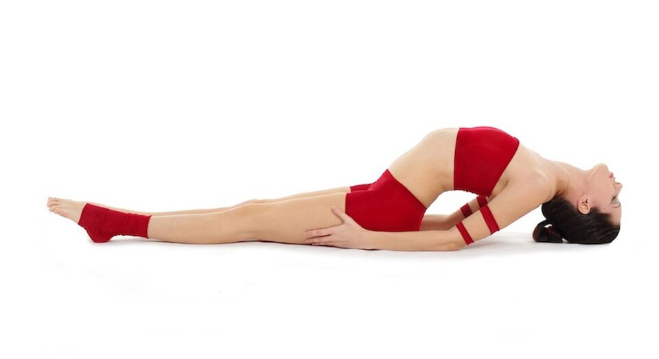 |
| Стоя | |||
| 32 | Поза воинаvīrabhadrāsana वीरभद्रासन | Несколько уровней. Вместе с треугольником и наклоном — связка на одну ногу, затем на другую. | |
| 32-1 | Простая — вирабхадрасана II | Ноги широко, переднее колено согнуто, руки в стороны, взгляд над передней рукой. |  |
| 32-2 | Сложнее — вирабхадрасана I | Таз развёрнут вперёд, переднее колено согнуто, руки вверх. | 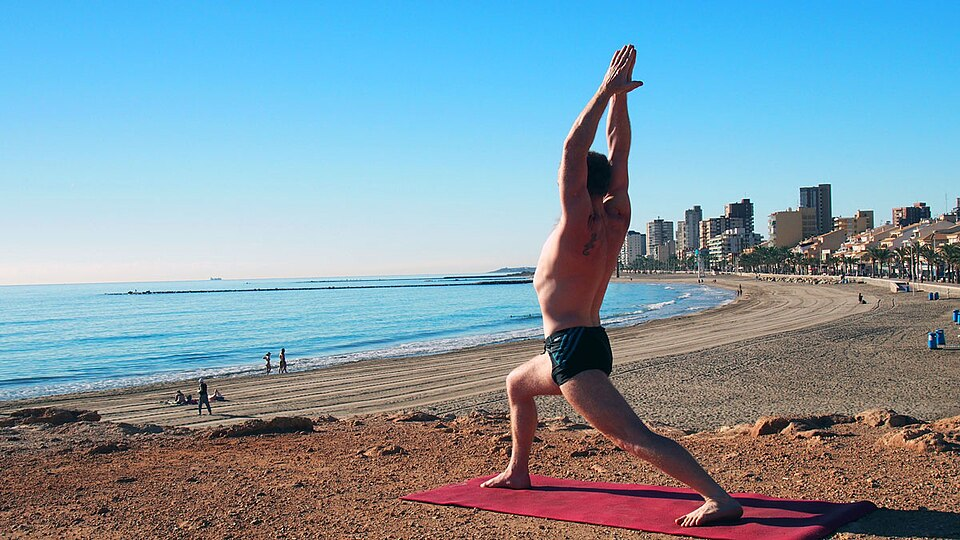 |
| 32-3 | Продвинутая — вирабхадрасана III | Баланс на одной ноге: корпус, руки и вторая нога в одну линию параллельно полу. | 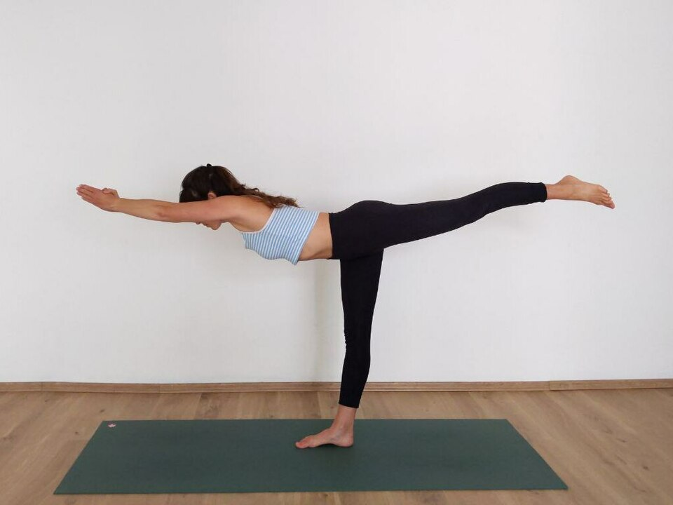 |
| 33 | Треугольникtrikoṇāsana त्रिकोणासन | Ноги широко, наклон вбок к передней ноге, вторая рука вверх. |  |
| 34 | Наклон к передней ногеpārśvottānāsana पार्श्वोत्तानासन | Ноги на ширине шага, обе прямые. Наклон к передней ноге. |  |
| 35 | Деревоvṛkṣāsana वृक्षासन | Стопа одной ноги на внутренней стороне бедра другой, ладони вместе. |  |
| Расслабление | |||
| 36 | Шавасанаśavāsana शवासन | Лёжа на спине, полное расслабление. |  |
| Дыхание и медитация | |||
| 37 | Капалабхатиkapālabhāti कपालभाति | Короткие активные выдохи животом, вдох пассивный. 108 раз. | 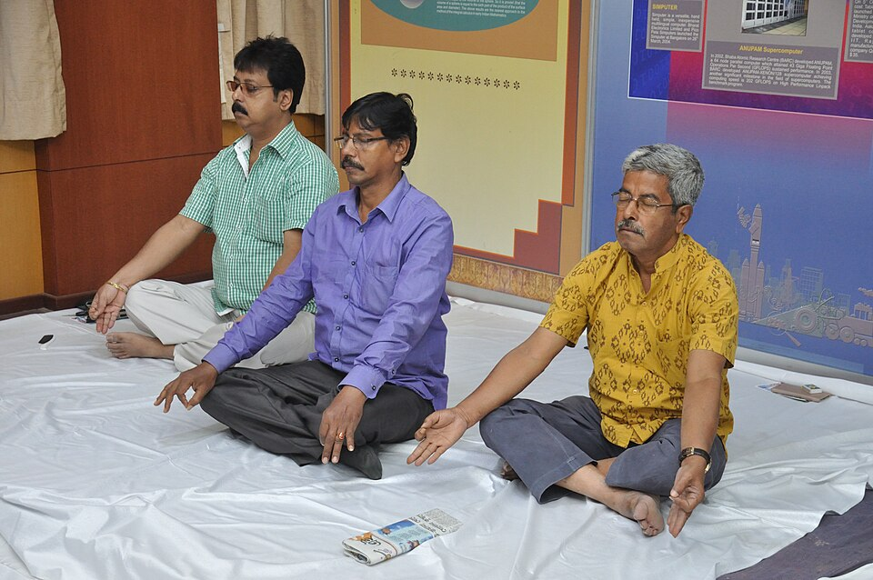 |
| 38 | Нади шодханаnāḍī śodhana नाडी शोधन | Дышим попеременно через левую и правую ноздрю, вторую закрываем пальцами. |  |
| 39 | Бхастрикаbhastrikā भस्त्रिका | Энергичные вдохи и выдохи одинаковой силы, как кузнечные мехи. | 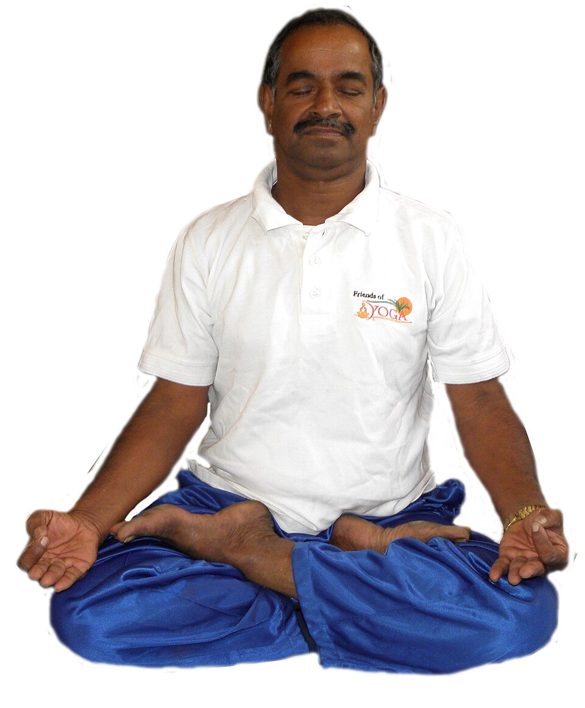 |
| 40 | Бхрамариbhrāmarī भ्रामरी | Уши закрыты пальцами, на выдохе длинный жужжащий звук. |  |
| 41 | Наблюдение за дыханиемdhyāna ध्यान | Сидим неподвижно и наблюдаем за дыханием. 5 минут. | 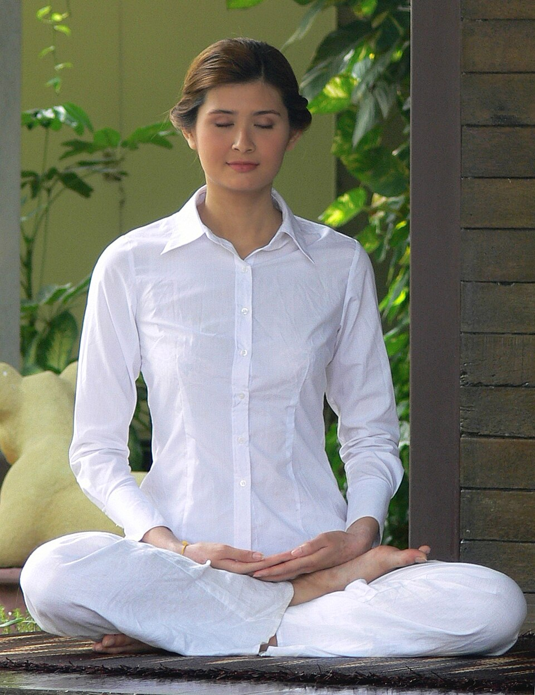 |